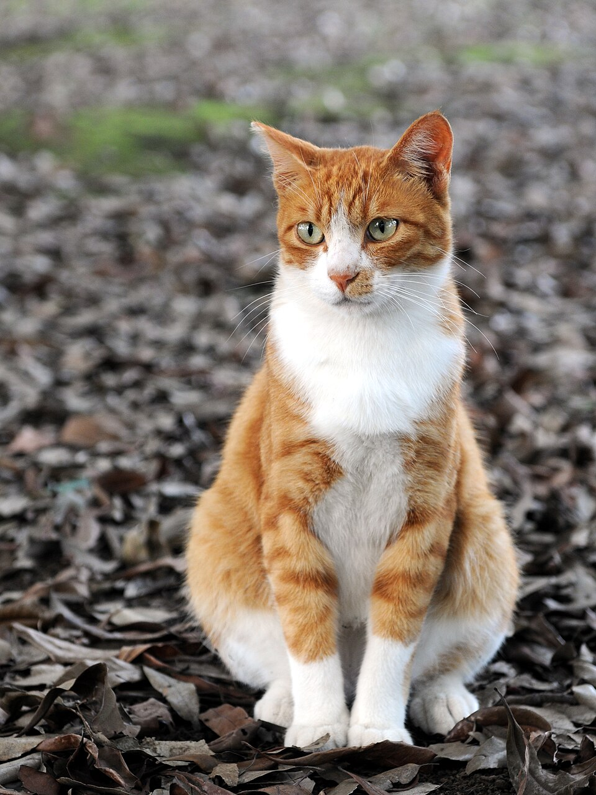

The cat (Felis catus), also called domestic cat and house cat, is a small carnivorous mammal.
It is an obligate carnivore, requiring a predominantly meat-based diet.
Its retractable claws are adapted to killing small prey species such as mice and rats.
It has a strong, flexible body, quick reflexes, and sharp teeth, and its night vision and sense of smell are well developed.

It is a social species, but a solitary hunter and a crepuscular predator.
Cat communication includes meowing, purring, trilling, hissing, growling, grunting, and body language.
It can hear sounds too faint or too high in frequency for human ears, such as those made by small mammals.
It secretes and perceives pheromones. Cat intelligence is evident in its ability to adapt, learn through observation, and solve problems.
Female domestic cats can have kittens from spring to late autumn in temperate zones and throughout the year in equatorial regions, with litter sizes often ranging from two to five kittens.